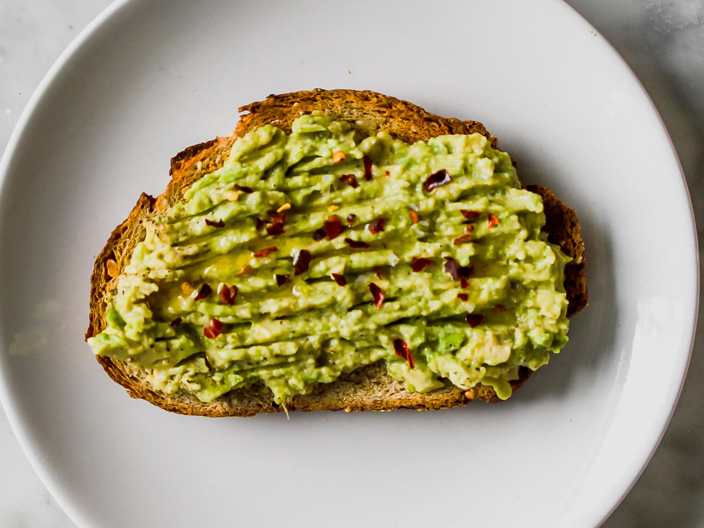

My Top Ten Favorite Foods
By Polina Vertegel
Pad Thai
Pad Thai is a Thai food with noodles.
Sushi

Sushi is a Japanese food that is made with rice and seaweed sheets. You can put anything you'd like in sushi.
Cinnamon Toast Crunch
Cinnamon Toast Crunch is a sugary cereal with cinnamon.
Peanut Butter
Peanut butter is one of my favorite foods because it goes well with anything.
Bagels
Bagels are one of my favorite foods because you can spread anything on them and make them however you like.
Chipotle Burrito Bowls
Chipotle bowls are basically a burrito without the tortilla. You can put anything you want in the bowls and it has less calories because you don't have the tortilla, but it still tastes the same.
Poke Bowls
Poke bowls are basically the same thing as a Chipotle bowl but the sushi version of it. It usually has rice and fish and some sort of vegetables in it, but you can put anything you want in it.
Korean BBQ
Korean BBQ is one of my favorite foods, specifically bulgogi. Bulgogi is a barbequed beef dish that's kind of like beef brisket.
Lasagna

Lasagna is an Italian pasta food with really wide pieces of pasta with meat and cheese layers in between.
Avocado Toast

Avocado toast is basically just a piece of toast with avocado spread on it. I love avocado so this is one of my favorite foods.